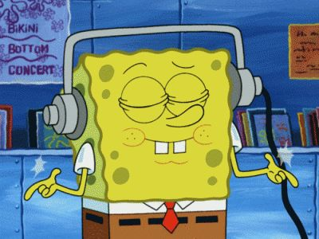

Cosas que hago todos los días
- Por la mañana
- Levantarme

- Ducharme

- Ir al instituto

- Por la tarde
- Comer

- Hacer deberes

- Estudiar

- Por la noche
- Repasar las asignaturas
- Escuchar música

- Dormir

Cosas que hago todos los días sin orden
- Por la mañana
- Desayunar
- Lavarme los dientes
- Cambiarme de ropa

- Por la tarde
- Descansar un poco
- Merendar
- Estar con el móvil
- Por la noche
- Ver vídeos
- Cenar
- Hablar por Whatsapp